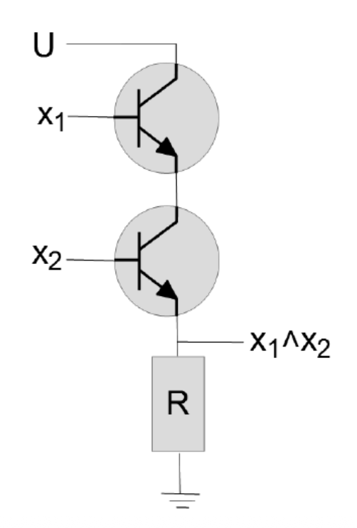

Schaltnetze
Serielle Gatterschaltung, UND-Verknüpfung
Die serielle Schaltung realisiert die logische Konjunktion: \( Y = A \land B \). Der Stromkreis ist nur geschlossen, wenn beide Schalter A und B aktiviert sind. Diese Grundform findet sich in Sicherheitsschaltungen, wo zwei unabhängige Bestätigungen benötigt werden.
Parallele Gatterschaltung, ODER-Verknüpfung
Die parallele Schaltung realisiert die logische Disjunktion: \( Y = A \lor B \). Hier reicht die Aktivierung eines beliebigen Schalters aus, um den Stromkreis zu schließen.
Physikalische Realisierung der Transistoren
Transistoren sind die fundamentalen Bauelemente der Digitaltechnik. Als Halbleiterbauelemente können sie durch Anlegen einer Steuerspannung zwischen Basis und Emitter den Stromfluss zwischen Kollektor und Emitter schalten.
Funktionsweise von Transistoren
Bei einem NPN-Transistor fließt ein Basisstrom, der einen größeren Kollektorstrom ermöglicht. Diese Stromverstärkung ermöglicht die Kaskadierung von Logikgattern. Die Miniaturisierung führte zu integrierten Schaltkreisen, ICs genannt, mit milliardenfacher Transistordichte.
Mehr über Transistoren ist hier zu finden.
Inverter, NOT-Gatter
Realisiert die Negation: \( Y = \overline{A} \). Ein High-Pegel am Eingang schaltet den Transistor durch, sodass der Ausgang auf Low gezogen wird. Bei Low-Eingang sperrt der Transistor, der Ausgang wird über den Pull-Up-Widerstand high.
AND-Gatter
Kombiniert mehrere Transistoren in Serie: Nur wenn alle Eingänge high sind, können alle Transistoren leiten und der Ausgang wird low (bei NAND) oder high, bei AND mit nachgeschaltetem Inverter.
OR-Gatter
Transistoren parallel geschaltet: Ein einziger high-Eingang reicht aus, um den Ausgangszustand zu ändern. Die ODER-Funktion wird oft durch NOR mit nachgeschaltetem Inverter realisiert.
Schaltsymbole
Inzwischen hat sich (bei uns) die IEC (International Electronical Commission) Norm durchgesetzt. Die Schaltsymbole sehen wie folgt aus:
Dekodierer
Wandelt einen binären Code in eine Aktivierung einer bestimmten Ausgangsleitung um. Ein n-zu-$2^n$-Dekodierer hat $n$ Eingänge und $2^n$ Ausgänge. Anwendungen: Speicher-Adressdecodierung, 7-Segment-Ansteuerung, Steuerlogik.
Multiplexer, MUX
Wählt eines von mehreren Eingangssignalen basierend auf einem Steuercode aus. Funktionell ein schaltbarer Weichensteller. Ein 2:1-MUX realisiert: \( Y = (\overline{S} \cdot D_0) + (S \cdot D_1) \). Anwendungen: Datenauswahl, parallele-zu-seriell-Wandlung, Logikimplementierung.
Komparator
Vergleicht zwei Binärzahlen bitweise unter Berücksichtigung von Übertragsinformation. Der mehrstufige Aufbau ermöglicht den Vergleich beliebig langer Zahlen. Die Übertragsfunktion lautet:
\[ U_{i+1} = A_i \cdot \overline{B_i} + U_i \cdot (A_i + \overline{B_i}) \]Diese Logik entscheidet, ob bis zur aktuellen Stelle $A$ größer als $B$ ist.
Addierwerke
Es gibt zwei Addierwerke:
-
Halbaddierer
Addiert zwei Bits ohne Übertragseingang: Summe = \( A \oplus B \), Übertrag = \( A \cdot B \)
-
Volladdierer
Addiert zwei Bits mit Übertragseingang: Summe = \( A \oplus B \oplus C_{in} \), Übertrag = \( A \cdot B + C_{in} \cdot (A \oplus B) \)

Bemerkung
Durch kaskadierte Volladdierer entstehen $n$-Bit-Addierwerke für arithmetische Operationen in Prozessoren.
Race Conditions
Durch unterschiedliche Signallaufzeiten in verschiedenen Pfaden einer Schaltung können kurzzeitige Fehlzustände, Glitches genannt, auftreten. Diese Race Conditions entstehen, wenn Signale asynchron durch die Logik propagieren.
Gegenmaßnahmen Race Conditions
Um Race Conditions zu vermeiden können folgende Gegenmaßnahmen unternommen werden:
Synchronisation durch Taktung
Hazard-Abdeckung in booleschen Funktionen
Pipelinierung kritischer Pfade
Verwendung von synchronen Schaltwerken